一只猫的慢生活
奶糖
的小窝
正在安静陪着你

陪它一会儿
30 秒后小动作
☀
待机
♧
逗猫
♡
喂食
♒
抓鱼
☁
休息
☾
睡觉
双击小猫可以摸摸它，按住小猫可以拖动。
今天穿什么
换装会自动记住
无
莓粉针织
晴蓝水手
暖黄毛衣
小窝外观
☀ 日间
☾ 夜间
小猫名字
保存
音效开
32%
大小
小
标准
大
更大
始终置顶
暂停活动
开机自启动
登录 Windows 后，让小猫自动来陪你
隐藏后可从任务栏右侧的小猫图标找回。